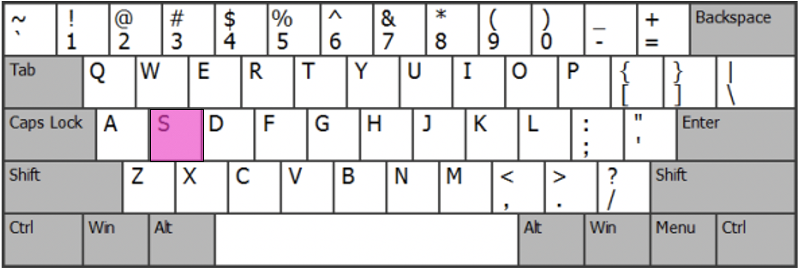

  <!DOCTYPE html>
  <html>
      <head>

  <title> Study1_Session1 </title>
  <script src="jspsych-6.1.0/jspsych.js"></script>
  <script src="jspsych-6.1.0/plugins/jspsych-html-keyboard-response.js"></script>
  <script src="jspsych-6.1.0/plugins/jspsych-image-keyboard-response.js"></script>
  <script src="jspsych-6.1.0/plugins/jspsych-html-button-response.js"></script>
  <script src="jspsych-6.1.0/plugins/jspsych-audio-keyboard-response.js"></script>
  <script src="jspsych-6.1.0/plugins/jspsych-survey-multi-select.js"></script>
  <script src="jspsych-6.1.0/plugins/jspsych-survey-text.js"></script>
  <script src="jspsych-6.1.0/plugins/jspsych-survey-likert.js"></script>
  <script src="jspsych-6.1.0/plugins/jspsych-survey-html-form.js"></script>
  <link href="jspsych-6.1.0/css/jspsych.css" rel="stylesheet" type="text/css"></link>
  </head>
  <body></body>

  <script>

  /* create timeline */
  var timeline = [];

  //Intro to Study//
  var intro = {
    type: "html-button-response",
    stimulus: '<p><strong>Thank you for participating in our study!</strong><p>' +
    '<p> In this session you will be asked to complete three different' +
    'cognitive tasks. You will recieve instructions before the start of each' +
    'task. Please try to complete all three tasks in one sitting.</p>',

    choices: ['Continue'],
  };
  timeline.push(intro);

  /*Instructions for English Word Pairs*/

  var instructions_English = {
    type : "html-button-response",
    stimulus: "<p><strong> Word Pairs Part 1 <p><strong>"+
    "<p> In the following task you will be shown a series of word pairs. You do not" +
    " need to press any keys during the task, simply pay attention to the words." +
    " Press 'start' when you are ready to begin... <p>",

    choices: ['Start'],
  };
  timeline.push(instructions_English)

  /*English Words Task*/
  /*5 sec each, with an inter-trial interval of 1000 ms*/


  var english_words = [
    {stimulus: "/Users/cristina/Documents/English Paired Associates/Pair 1.png",},
    {stimulus: "/Users/cristina/Documents/English Paired Associates/Pair 2.png",},
    {stimulus: "/Users/cristina/Documents/English Paired Associates/Pair 3.png",},
    {stimulus: "/Users/cristina/Documents/English Paired Associates/Pair 4.png",},
    {stimulus: "/Users/cristina/Documents/English Paired Associates/Pair 5.png",},
    {stimulus: "/Users/cristina/Documents/English Paired Associates/Pair 6.png",},
    {stimulus: "/Users/cristina/Documents/English Paired Associates/Pair 7.png",},
    {stimulus: "/Users/cristina/Documents/English Paired Associates/Pair 8.png",},
    {stimulus: "/Users/cristina/Documents/English Paired Associates/Pair 9.png",},
    {stimulus: "/Users/cristina/Documents/English Paired Associates/Pair 10.png",},
  ];


  var fixation = {
    type: 'html-keyboard-response',
    stimulus: '<div style="font-size:60px;">+</div',
    choices: jsPsych.NO_KEYS,
    trial_duration: 300,
    data: {test_part: 'fixation'},
  }

  var test = {
    type: "image-keyboard-response",
    stimulus: jsPsych.timelineVariable('stimulus'),
    choices: jsPsych.NO_KEYS,
    trial_duration: 5000,
    }

  var test_procedure = {
    timeline: [fixation, test],
    timeline_variables: english_words,
    }

    timeline.push(test_procedure);

    var intro_motor_task = {
      type : "html-button-response",
      stimulus: "<p><strong> Keyboard Sequences <p><strong>"+
      "</img>" +
      "<p> In the following task you will be asked to press either "+
      "the 'A','S','K', or 'L' keys with your right or left index and middle"+
      "fingers as shown in the diagram above. Please try to press the correct key"+
      "as quickly as you can. Sounds will also be played while you complete the"
      +"task so please ensure you are able to hear any computer generated sounds.<p>",

      choices: ['Start'],
    };

      var fixation = {
        type: 'html-keyboard-response',
        stimulus: '<div style="font-size:60px;">+</div',
        choices: jsPsych.NO_KEYS,
        trial_duration: 300, /* ms */
        data: {test_part: 'fixation'}
      }

      var A_seq = {
      type: 'audio-keyboard-response',
      timeline: [
        /*A*/
        {stimulus:"Music Notes/Piano.ff.A5-[AudioTrimmer.com].mp3", prompt:'', choices: ['a'],},
        /*S*/
        {stimulus:"Music Notes/Piano.ff.B0-[AudioTrimmer.com].mp3", prompt:'', choices: ['s'],},
        /*A*/
        {stimulus:"Music Notes/Piano.ff.A5-[AudioTrimmer.com].mp3", prompt:'', choices: ['a'],},
        /*L*/
        {stimulus:"Music Notes/Piano.ff.F1-[AudioTrimmer.com].mp3", prompt:'', choices: ['l'],},
        /*S*/
        {stimulus:"Music Notes/Piano.ff.B0-[AudioTrimmer.com].mp3", prompt:'', choices: ['s'],},
        /*K*/
        {stimulus:"Music Notes/Piano.ff.E5-[AudioTrimmer.com].mp3",prompt:'', choices:['k'],},
        /*L*/
        {stimulus:"Music Notes/Piano.ff.F1-[AudioTrimmer.com].mp3", prompt:'', choices: ['l'],},
        /*A*/
        {stimulus:"Music Notes/Piano.ff.A5-[AudioTrimmer.com].mp3", prompt:'', choices: ['a'],},
        /*K*/
        {stimulus:"Music Notes/Piano.ff.E5-[AudioTrimmer.com].mp3",prompt:'', choices:['k'],},
        /*S*/
        {stimulus:"Music Notes/Piano.ff.B0-[AudioTrimmer.com].mp3", prompt:'', choices: ['s'],},
        /*L*/
        {stimulus:"Music Notes/Piano.ff.F1-[AudioTrimmer.com].mp3", prompt:'', choices: ['l'],},
        /*K*/
        {stimulus:"Music Notes/Piano.ff.E5-[AudioTrimmer.com].mp3",prompt:'', choices:['k'],},
      ]
}
      /*A_key,S_key,A_key,L_key,S_key,K_key,L_key,A_key,K_key,S_key,L_key,K_key];*/

      var B_seq = {
      type: 'audio-keyboard-response',
      timeline: [
        /*S*/
        {stimulus:"Music Notes/Piano.ff.B0-[AudioTrimmer.com].mp3", prompt:'', choices: ['s'],},
        /*L*/
        {stimulus:"Music Notes/Piano.ff.F1-[AudioTrimmer.com].mp3", prompt:'', choices: ['l'],},
        /*K*/
        {stimulus:"Music Notes/Piano.ff.E5-[AudioTrimmer.com].mp3",prompt:'', choices:['k'],},
        /*S*/
        {stimulus:"Music Notes/Piano.ff.B0-[AudioTrimmer.com].mp3", prompt:'', choices: ['s'],},
        /*K*/
        {stimulus:"Music Notes/Piano.ff.E5-[AudioTrimmer.com].mp3",prompt:'', choices:['k'],},
        /*A*/
        {stimulus:"Music Notes/Piano.ff.A5-[AudioTrimmer.com].mp3", prompt:'', choices: ['a'],},
        /*L*/
        {stimulus:"Music Notes/Piano.ff.F1-[AudioTrimmer.com].mp3", prompt:'', choices: ['l'],},
        /*S*/
        {stimulus:"Music Notes/Piano.ff.B0-[AudioTrimmer.com].mp3", prompt:'', choices: ['s'],},
        /*K*/
        {stimulus:"Music Notes/Piano.ff.E5-[AudioTrimmer.com].mp3",prompt:'', choices:['k'],},
        /*A*/
        {stimulus:"Music Notes/Piano.ff.A5-[AudioTrimmer.com].mp3", prompt:'', choices: ['a'],},
        /*L*/
        {stimulus:"Music Notes/Piano.ff.F1-[AudioTrimmer.com].mp3", prompt:'', choices: ['l'],},
        /*A*/
        {stimulus:"Music Notes/Piano.ff.A5-[AudioTrimmer.com].mp3", prompt:'', choices: ['a'],},
      ]

  }

  var Rand_seq = {
  type: 'audio-keyboard-response',
  timeline: [
    /*A*/
    {stimulus:"Music Notes/Piano.ff.A5-[AudioTrimmer.com].mp3", prompt:'', choices: ['a'],},
    /*S*/
    {stimulus:"Music Notes/Piano.ff.B0-[AudioTrimmer.com].mp3", prompt:'', choices: ['s'],},
    /*A*/
    {stimulus:"Music Notes/Piano.ff.A5-[AudioTrimmer.com].mp3", prompt:'', choices: ['a'],},
    /*L*/
    {stimulus:"Music Notes/Piano.ff.F1-[AudioTrimmer.com].mp3", prompt:'', choices: ['l'],},
    /*S*/
    {stimulus:"Music Notes/Piano.ff.B0-[AudioTrimmer.com].mp3", prompt:'', choices: ['s'],},
    /*K*/
    {stimulus:"Music Notes/Piano.ff.E5-[AudioTrimmer.com].mp3",prompt:'', choices:['k'],},
    /*L*/
    {stimulus:"Music Notes/Piano.ff.F1-[AudioTrimmer.com].mp3", prompt:'', choices: ['l'],},
    /*A*/
    {stimulus:"Music Notes/Piano.ff.A5-[AudioTrimmer.com].mp3", prompt:'', choices: ['a'],},
    /*K*/
    {stimulus:"Music Notes/Piano.ff.E5-[AudioTrimmer.com].mp3",prompt:'', choices:['k'],},
    /*S*/
    {stimulus:"Music Notes/Piano.ff.B0-[AudioTrimmer.com].mp3", prompt:'', choices: ['s'],},
    /*L*/
    {stimulus:"Music Notes/Piano.ff.F1-[AudioTrimmer.com].mp3", prompt:'', choices: ['l'],},
    /*K*/
    {stimulus:"Music Notes/Piano.ff.E5-[AudioTrimmer.com].mp3",prompt:'', choices:['k'],},
  ],
randomize_order: true,
}

  // Build sequences of repeats
  var tests_A = jsPsych.randomization.repeat([A_seq], 5);
  var tests_B = jsPsych.randomization.repeat([B_seq], 5);
  var tests_rand = jsPsych.randomization.repeat([Rand_seq], 1);
  // Join them all together
  var all_tests = [tests_A, tests_B, tests_rand].flat();
  // Shuffle them
  all_tests = jsPsych.randomization.shuffle(all_tests);
  // Instert fixations
  all_tests_with_fixations = [];
  for (currTrial = 0; currTrial < all_tests.length; currTrial++)
    {
      all_tests_with_fixations.push(all_tests[currTrial]);
      all_tests_with_fixations.push(fixation);
    }
  // Build the timeline
  timeline_motor = [intro_motor_task, all_tests_with_fixations].flat()

  timeline.push([intro_motor_task, all_tests_with_fixations].flat());


  /* INSTRUCTIONS FOR PSEUDO-WORDS */

    var pseudo_word_task = {
      type : "html-button-response",
      stimulus: "<p><strong> Word Pairs Part 2 <p><strong>"+
      "<p> In the following task you will be shown a series of word pairs as "
      + "in the first task. You do not need to press any keys during the task, simply"
      +"pay attention to the words. Press 'start' when you are ready to begin.<p>",

      choices: ['Start'],
    };
    timeline.push(pseudo_word_task)


  /*5 sec each, with an inter-trial interval of 1000 ms*/

  var pseudo_words = [
    {stimulus: "/Users/cristina/Documents/HERE/PW pair 1.png"},
    {stimulus: "/Users/cristina/Documents/HERE/PW pair 2.png"},
    {stimulus: "/Users/cristina/Documents/HERE/PW pair 3.png"},
    {stimulus: "/Users/cristina/Documents/HERE/PW pair 4.png"},
    {stimulus: "/Users/cristina/Documents/HERE/PW pair 6.png"},
    {stimulus: "/Users/cristina/Documents/HERE/PW pair 7.png"},
    {stimulus: "/Users/cristina/Documents/HERE/PW pair 8.png"},
    {stimulus: "/Users/cristina/Documents/HERE/PW pair 9.png"},
    {stimulus: "/Users/cristina/Documents/HERE/PW pair 10.png"},
  ];

    var fixation = {
      type: 'html-keyboard-response',
      stimulus: '<div style="font-size:60px;">+</div',
      choices: jsPsych.NO_KEYS,
      trial_duration: 300,
      data: {test_part: 'fixation'},
    }

    var test_pw = {
      type: "image-keyboard-response",
      stimulus: jsPsych.timelineVariable('stimulus'),
      choices: jsPsych.NO_KEYS,
      trial_duration: 5000, /* ms */
    }

    var fixation_testpw_flat = [fixation, test_pw].flat();

    var pseudo = {
      timeline: [fixation, test_pw],
      timeline_variables: pseudo_words,
    }

    //timeline.push(pseudo);
// -------------------------------------------------------------------
    //Munich Chronotype
    munich_chronotype = [];

    var survey_intro = {
      type : "html-button-response",
      stimulus: "<p><strong> Surveys <p><strong>"+
      "<p> <b> Thank you for completing all the tasks! </b>"
      + "The final part of today's study involves completing some survey questions"
      +"regarding your lifestyle. Press 'start' when you are ready to begin.<p>",

      choices: ['Start'],
    };
    munich_chronotype.push(survey_intro)


                        // WORKDAYS

    var workdays_1 = {
      type: 'survey-html-form',
      preamble: "<p><b> WORKDAYS </b>"+"Please use 24-hour time scale (e.g. 23:00 instead of 11:00 pm)!.</p>",
        html: "<p> I go to bed at <input name='first' type='text'/> o'clock. " +
        " Note that some people stay awake for some time when in bed! " +
        "I actually get ready to fall asleep at <input name='second' type='text'/> o'clock."+
        "I need <input name='third' type='text'/> minutes to fall asleep " +
        "I wake up at <input name='fourth' type='text'/> o'clock." +
        "After <input name='fifth' type='text'/> minutes I get up.</p>"
      };
    munich_chronotype.push(workdays_1);


      var workdays_2 = {
        type: 'survey-multi-select',
        preamble: "<p><b> WORKDAYS CONTINUED </b></p>",
        questions: [
          {
          prompt: "I use an alarm clock on workdays",
          options: ["TRUE", "FALSE"],
        },
          {
          prompt: "If true: I regularly wake up BEFORE the alarm rings",
          options: ["TRUE", "FALSE"],
          }
        ],
      };
      munich_chronotype.push(workdays_2);
                              //FREE DAYS
      var freedays_1 = {
        type: 'survey-html-form',
        preamble: "<p><b> FREE DAYS </b></p>"+"<p>Please use 24-hour time scale (e.g. 23:00 instead of 11:00 pm)!.</p>" ,
        html:
          "<p> I go to bed at <input name='freedays_first' type='text'/> o'clock." +
          "Note that some people stay awake for some time when in bed!" +
          "I actually get ready to fall asleep at <input name='freedays_second' type='text'/> o'clock."+
          "I need <input name='freedays_third' type='text'/> minutes to fall asleep" +
          "I wake up at <input name='freedays_fourth' type='text'/> o'clock." +
          "After <input name='freedays_fifth' type='text'/> minutes I get up.</p>"
    };
      munich_chronotype.push(freedays_1);

      var freedays_2 = {
        type: 'survey-multi-select',
        preamble: "<p><b> FREE DAYS CONTINUED </b></p>",
        questions: [
          {
          prompt: "My wake-up time is due to the use of an alarm clock",
          options: ["TRUE", "FALSE"],
        },
          {
          prompt: "There are particular reasons why I cannot freely choose my sleep times on free days",
          options:  ["FALSE", "TRUE-Child(ren)/pet(s)", "TRUE- Hobbies", "TRUE-Other"],
        }
      ],
      };
      munich_chronotype.push(freedays_2);

                              //WORK DETAILS

    var work_1 = {
      type: 'survey-html-form',
      preamble: "<p><b> WORK DETAILS </b></p>"+"<p>My usual work schedule …</p>" ,
      html:
        "<p> … starts at <input name='workdA' type='text'/> o'clock." +
        "… ends at <input name='workdB' type='text'/> o'clock. </p>"

    };
      munich_chronotype.push(work_1);

      var work_2 = {
        type: 'survey-multi-select',
        preamble: "<p><b> WORK DETAILS CONTINUED </b></p>",
        questions: [
          {
          prompt: "My work schedules are...",
          options: ["very flexible", "a little flexible","rather inflexible","very inflexible "],
        },
          {
          prompt: "I travel to work",
          options: ["within an enclosed vehicle (e.g. car, bus, underground)", "not within an enclosed vehicle (e.g. on foot, by bike).","I work at home"],
        },
        {
        prompt: "In the last 3 months, I worked as a shift worker. ",
        options: ["TRUE", "FALSE"],
      },
      ],
      };
      munich_chronotype.push(work_2);

      var work_3 = {
        type: 'survey-html-form',
        preamble: "<p><b> WORK DETAILS CONTINUED </b></p>",
        html:
          "<p> For the commute <b>to work<b/>, I need <input name='workd1' type='text'/> hours and <input name='workd2' type='text'/> minutes." +
          "For the commute <b>from work<b/>, I need <input name='workd3' type='text'/> hours and <input name='workd4' type='text'/> minutes. </p>"

      };
        munich_chronotype.push(work_1);


                                // TIME SPENT OUTDOORS
        var outdoors = {
        type: 'survey-html-form',
        preamble: "<p><b> TIME SPENT OUTDOORS </b></p>"+"<p> On average, I spend the following amount of time outdoors in daylight (without a roof above my head)... </p>",
        html:
          "<p> on workdays: <input name='outdoors1' type='text'/> hours <input name='outdoors2' type='text'/> minutes." +
          "    on free days: <input name='outdoors3' type='text'/> hours <input name='outdoors4' type='text'/> minutes. </p>"

      };
      munich_chronotype.push(outdoors);

                                    //STIMULANTS
        var stimulants = {
        type: 'survey-html-form',
        preamble: "<p>Please give approximate/average amounts!</p>",
        html:
            "<p> I smoke <input name='stim1' type='text'/> cigarettes a day." +
            " I drink <input name='stim2' type='text'/> pints od beer a day." +
            " I drink <input name='stim3' type='text'/> glasses of wine." +
            " I drink <input name='stim4' type='text'/> glasses of liquor/whiskey/gin etc a day" +
            " I drink <input name='stim5' type='text'/> cups of coffee." +
            " I drink <input name='stim6' type='text'/> cups of black tea." +
            " I drink <input name='stim7' type='text'/> cans of caffeinated drinks (soft-drinks)." +
            " I take sleep medication <input name='stim8' type='text'/> times a week. </p>"
      };
      munich_chronotype.push(stimulants);
      flat_mcq= munich_chronotype.flat()

      var sss_scale = [
        " 1. Feeling active and vital; alert; wide awake. ",
        " 2. Functioning at a high level, but not at peak; able to concentrate.",
        " 3. Relaxed; awake; not at full alertness; responsive.",
        " 4. A little foggy; not at peak; let down",
        " 5. Fogginess; beginning to lose interest in remaining awake; slowed down.",
        " 6. Sleepiness; prefer to be lying down; fighting sleep; woozy",
        " 7. Almost in reverie; sleep onset soon; lost struggle to remain awake.",
      ];

      var sss = {
        type: 'survey-likert',
        questions: [
          {prompt: "Please indicate your current level of sleepiness/alertness", name: 'SSS', labels: sss_scale},
        ]
      };
        //flat_sss = sss.flat()

    timeline = [intro, instructions_English, test_procedure, intro_motor_task, all_tests_with_fixations, pseudo_word_task, pseudo, flat_mcq, sss].flat()

    jsPsych.init({
  		// For this experiment, just use the timeline that we just built
  			timeline: timeline,
        preload_images: ["Keyboard/A_Key.png","Keyboard/S_Key.png","Keyboard/K_Key.png","Keyboard/L_Key.png"],
        use_webaudio: false,
        show_progress_bar: true,
        on_finish: function () {
            jsPsych.data.displayData();
        }
    });

    </script>

    </html>
